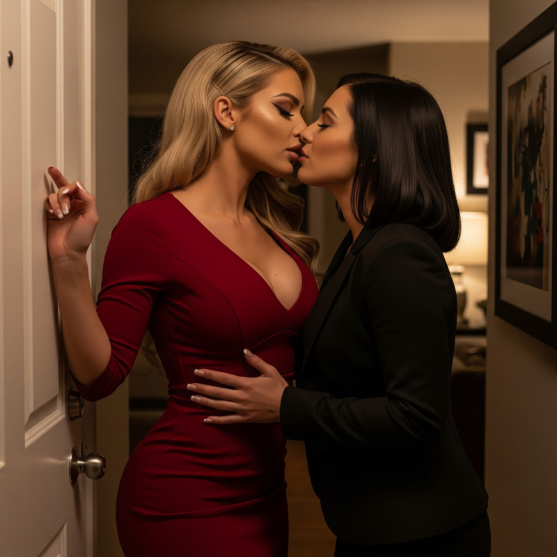

The drive home was tense with anticipation. Casey's hand rested on my thigh, higher than professional. Possessive. At red lights, she stared at me with naked hunger that sent heat through my artificially enhanced body.
"Casey," I said as we drove, my swollen lips still unfamiliar against my teeth. "What happened today... that wasn't just about camera presence, was it?"
Her hand stilled on my thigh. "What do you mean?"
"Beau." I shifted in the passenger seat, the weight of the prosthetics making every movement deliberate. "The timing of when he showed up, the way he looked at me when I was trapped in that chair. That wasn't professional image input-that was personal."
Casey kept her eyes on the road. "Beau wanted you television-ready. That's what Victoria delivered."
"No, Case. Think about it. He waited until you left to make his move. The Catherine Harrison thing-whoever she is, that wasn't about my job performance. That was his fantasy." The gel nails clicked against the window as I gestured, the sound still startling me. "He enjoyed watching me squirm."
She was quiet for several blocks, navigating through downtown traffic while I felt the pieces clicking together in my mind.
"He's still pissed about our original fight," I continued. "About me not backing down, making him look weak in front of staff. This was payback, wasn't it? Professional necessity was just the excuse."
"Evan-"
"He turned me into his personal revenge fantasy. The proportions, the styling, all of it-way beyond what any press secretary would need. He wanted to humiliate me."
Casey's expression grew troubled. "You're overthinking this."
"Am I?" I spat, temper flaring. "Or are you just realizing you left me alone with someone who wanted to punish me?"
The question hung in the car's confined space. "I'm sorry I had to leave. If I'd known how far Victoria would take things..."
"What was so damn important about the Lieutenant Governor that you had to abandon me for hours?"
"I really don't want to get into that right now," she said tersely, but the expression that crossed her face showed a glimpse of hurt. "Evan, I-"
Her voice carried genuine pain, and I felt like an asshole for putting it there.
"God, I'm sorry." The words tumbled out as I saw her wounded expression. "I'm being paranoid, aren't I? You've been nothing but supportive through all of this, and I'm accusing you of... what? Abandoning me on purpose?"
Casey's grip tightened on the steering wheel, but she didn't respond immediately.
"I know you couldn't have known what Victoria would do," I said, reaching over to touch her arm. "I'm just... this whole day has me rattled. The Lieutenant Governor thing was obviously more important than babysitting me through a makeover."
"It's okay," she said softly. "You've been through a lot today."
"No, it's not okay. You've been taking care of me for months-helping me dress, making sure I don't embarrass myself, covering for my mistakes. And the first time you have to handle a real crisis, I act like you betrayed me." I shook my head, disgusted with myself. "I'm sorry, Case. Really."
She glanced at me, and something in her expression softened. "You've been under incredible pressure. Anyone would be on edge."
The forgiveness in her voice made me feel even worse about my accusation. Here was someone who'd been my lifeline through this entire nightmare, and I'd responded to one difficult day by questioning her.
"Let me make it up to you," she said, her voice dropping slightly as her hand moved back to my thigh.
Before I could ask what she meant, her fingers slipped under the hem of my dress. The touch was electric against my skin, and I found myself shifting to give her better access without quite meaning to.
"Casey, we're driving-"
"Tell me how you're feeling," she said. "I mean really feeling. In all of this."
Her touch was warm and insistent, and I realized how much I'd been craving this kind of attention from her. Not just physical, but the way she focused entirely on me when we were alone together.
"Trapped, honestly. Everything feels different." The admission came easier than expected, maybe because of her touch or the way she was looking at me with such intense concern.
"Different how?" Her fingers traced small circles on my inner thigh, and I felt my breathing change.
"The heels make me feel like I'm walking on stilts. My balance is completely off." I gestured awkwardly with the gel nails. "And these things make everything impossible. I can't grip anything properly, and they clack against things all the time."
"Your dress is gorgeous though."
"I can barely bend forward in this thing. The fabric's so tight I feel..." I struggled for words while her fingers found more sensitive areas. "Contained. Like I'm wrapped up in something I can't escape from."
Her hand found my shaft under the dress, fingers wrapping around me with urgency. The sudden contact made me gasp. There was something about being touched while constrained by the dress, dependent on her guidance, that sent heat through me in ways I couldn't anticipate.
"You can't undress yourself at all?"
"The zipper… I can't reach it." I twisted to demonstrate the awkward angle, my breath catching as her grip tightened. "It's like I'm completely dependent on you for everything."
The words came out with less resentment than I'd expected. In fact, there was something in the admission that felt almost... right. Natural. Like this was how things were supposed to be between us.
"Everything?" Her voice had become breathy.
"Getting dressed, undressed, even basic tasks." I found myself leaning into her touch rather than just accepting it. "I feel like I'm wearing a costume I can't take off."
Casey made a soft sound, and I realized my honesty was affecting her as much as it was me. Her obvious arousal at my dependency created a feedback loop-the more I admitted my reliance on her, the more she responded, which made me want to give her more.
"And your hair? The extensions?"
"So heavy. I can feel them pulling at my scalp every time I move." I turned my head to demonstrate. "It doesn't even feel like mine."
Her hand worked with increasing urgency now, and I understood that my descriptions weren't just informing her-they were turning her on. The helplessness I'd been fighting against was exactly what she found attractive.
By the time we reached her apartment building, I was gasping and desperate for completion. She withdrew her hand reluctantly, leaving me aching in ways that had nothing to do with physical discomfort and everything to do with wanting her to continue taking control.
"Come on," she said, her voice rough with desire. "Let's get you upstairs so I can properly take care of you."
The words sent another wave of heat through me. Not help me, not assist me. Take care of me. Like I was something precious that needed her protection and guidance.
Inside her apartment-our apartment-she pressed me against the wall before the door fully closed. Her mouth found mine with desperate hunger, teeth catching my tender, newly plumped lips that Victoria had sculpted. I whimpered, partially in pain but mostly with desire.
{kind=link}

"I need you," she breathed against my mouth, her hands already exploring the new geography of my body through the dress fabric. "I've been thinking about you all day."
She pulled back to look at me, her eyes traveling from my blonde hair to the dramatic cleavage the dress showcased. Something shifted in her expression-hunger mixed with the same possessive satisfaction I'd seen in the car.
"God, Evan," she whispered. "Look what they did to you."
She found the zipper at my back-the one I'd demonstrated I couldn't reach-and slowly drew it down. The dress loosened around me like a shed skin, revealing the body Victoria had engineered underneath. When the dress pooled around my feet, she stepped back with an intake of breath that sounded almost pained. Standing there in a bra and panties, I felt more exposed than I ever had fully naked.
I reached to turn off the lights, but she stopped my hand.
"I want to see," she said, and I caught something raw in her voice. "Every bit of you."
The tenderness of her touch, combined with her obvious desire, made me understand something fundamental about what was happening between us. This wasn't just about the transformation or even physical attraction. It was about the way she'd been gradually taking responsibility for more and more aspects of my life, and how natural that had begun to feel.
As she walked me backward toward the bedroom, her hands never stopping their exploration, I realized I wasn't just accepting her control-I was craving it. Each decision she made for me, each task she handled, each moment where she took charge felt like relief rather than limitation.
The person I'd been before-independent, stubborn, always fighting to prove himself-felt increasingly foreign compared to this version who could relax into Casey's capable hands.
Whatever was happening to my body through Victoria's modifications and Dr. Martinez's injections, something was happening to my mind as well. And unlike the physical changes I couldn't control, this psychological shift felt like coming home.
When Casey pushed me onto the bed, I felt the weight of the prosthetics bounce against my body. "They look-they feel so real," she marveled, caressing my chest. "If I didn't know..."
"They're heavy," I said. "I can barely stand upright."
"You won't need to stand," she said, her smile predatory as she pushed me back against the pillows.
She practically tore my bra and panties off, revealing my body in all its captivating, artificial glory. Casey's eyes mapped every inch of Victoria's handiwork-the airbrushed blend where silicone met skin, the way the breast forms moved naturally with my breathing, the dramatic hourglass that the combined prosthetics created.
My French manicured nails caught the light as I reached up instinctively to cover myself. The gesture was futile; there was too much artificial femininity to hide.
"Don't," Casey said, catching my wrists with gentle but insistent pressure. "I want to see all of it."
She pressed my arms back against the pillows, and I let her. More than let her-I relaxed into her guidance, understanding that this was what she wanted and discovering I wanted to give it to her. The extensions felt heavy against the sheets as my hair fanned out around my head.
"Keep the heels on," she said when I started to remove them, and the authority in her voice made me freeze mid-motion.
I'd been about to protest that they were uncomfortable, that I wanted them off, but something about her tone made me reconsider. She wanted me to keep them on, and I found myself settling back into position without argument.
She guided my ankles to her shoulders, the heels pressing into her skin as she positioned me exactly how she wanted. The changed angle made me feel more vulnerable, more displayed, and instead of being embarrassed I felt a thrill at being arranged for her pleasure.
"Good girl," she said, her voice dropping to something intimate and commanding, "Say your name for me."
In an instant, I knew what she wanted to hear. And it wasn't "Evan." This felt different. Dangerous.
"I don't-" I started, but she cut me off with a kiss, deep and searching.
"Say it," she repeated against my lips.
I hesitated, some part of me understanding this would be crossing a threshold. In all our months of intimacy, Casey had maintained the boundary between public Yvonne and private Evan. She'd been the one person who still called me by my real name when we were alone, who let me be myself in our most intimate moments.
But now she was asking me to surrender even that final refuge, to let Yvonne exist even here in our bed. The internal battle felt overwhelming-between the safety of keeping Evan alive in private and the growing desire to give Casey whatever she wanted.
"Please," she whispered, and there was something almost desperate in her voice. "I need to hear it."
Her eyes held mine with such intensity that resistance felt impossible. But more than that, I was starting to understand that part of me wanted to say it. Wanted to give her this final piece of control she was asking for.
"Yvonne," I whispered finally, the word escaping like a confession.
The word seemed to unlock something primal in her. She pushed me back against the pillows with sudden intensity. Something shifted in her expression-triumph mixed with hunger-and I saw desperate, animal passion behind her eyes.
"Again," she said, and this time it wasn't quite a demand, more like desperate need.
"Yvonne." This time it came easier, and with each repetition I felt something inside me give way. Some resistance I'd been maintaining without even realizing it.
The word seemed to transform her. She kissed me with sudden intensity, her mouth moving to my throat while her hands claimed my narrowed waist. I found myself arching into her touch, offering myself more completely than I ever had before.
Her mouth moved lower, exploring the landscape Victoria had created with the kind of attention that made me feel treasured. When she reached the prosthetics, she caressed them with obvious fascination.
"They even taste real," she breathed against the silicone, and something about her clinical fascination mixed with desire made me harder than I'd expected.
The disconnect was unsettling and exhilarating, all at once. Casey's obvious pleasure as she worked the artificial nipples with her tongue had nothing to do with any sensation I could experience. I was just the armature underneath-the framework supporting a construction designed for others' consumption rather than my own experience. But in the moment, even that realization felt dangerous and thrilling.
She moved with desperate intensity tonight, her hands roaming over the curves Victoria had built while I watched her become increasingly aroused by what I couldn't feel. When she pressed the prosthetics together, her breathing became more labored, and I realized these enhancements served her pleasure more than mine. They were visual, tactile experiences for anyone who viewed or touched me, while I remained disconnected from what was happening to my own body.
As Casey moved above me with increasing urgency, I found myself caught between physical pleasure and psychological alienation. The parts of my body that seemed to drive her most intense responses were the parts I couldn't feel, while the parts that were actually mine felt almost secondary to the performance Victoria had constructed around them.
Casey worked her way down my transformed silhouette, tracing curves that hadn't existed this morning. When her tongue finally found my cock, now nestled between enhanced hips that made it look smaller, more delicate, I arched against the bed with a gasp that surprised us both. Everything felt different-more intense, more electric.
"You're so hard," she murmured. She wasn't wrong. Whatever the hormones were doing to the rest of my body, they hadn't touched this part of me yet. But the sensations that pulsed through my body were unlike anything I'd experienced before-her mouth's familiar warmth combined with the alien weight pulling at my chest, the tug of extensions in my hair, the changed angles my body created against the mattress. Every part of my transformed body was involved in the experience.
She worked me with her mouth while her hands continued exploring the artificial curves, and I found myself writhing beneath her in ways that felt completely natural despite how foreign my body had become. The gel nails scraped uselessly at the sheets, too long and smooth to find purchase.
When I was gasping, desperate, she moved up and positioned herself over my face. "Your turn," she said, lowering herself until I could taste her arousal.
I worked her with my tongue while she ground against my mouth, my view filled with her body while the breast forms pressed heavily into my ribs. I had to arch my neck differently to reach her. Even the act of pleasuring her was transformed by Victoria's modifications.
She rode my face with increasing urgency, her hands tangled in my extensions while I struggled to breathe. When she came, it was with my name-my new name-torn from her throat.
"Yvonne," she gasped as waves of climax shook her. "God, Yvonne."
Before I could fully process the shift, she was moving down my body again, positioning herself above me. When she finally straddled me, guiding me inside her, the sensation was overwhelming. Our breasts pressed between us, their weight shifting with each movement. She held me down, forced me to participate passively while she controlled the rhythm.
"Say it again," she demanded, rising and falling while I struggled to think coherently.
"Yvonne," I gasped, and watched her face transform with something like possession.
She moved with increasing intensity as I repeated the name, each vocalization seeming to fuel her arousal. I found myself meeting her rhythm despite the unfamiliar weight distribution, despite feeling off-balance, because pleasing her had become more important than my own coordination.
"I want to watch you come as her," she whispered, her hands braced against the artificial chest, and something in her voice made me understand this wasn't just dirty talk-this was important to her in ways that went deeper than simple desire.
The intensity built until I was making sounds I'd never made before-higher pitched, more desperate, influenced by whatever the hormones were already doing to my sense of arousal. When release finally crashed through me, it was with my back arched impossibly while Casey's name leapt from my throat in a voice I barely recognized.
She collapsed against me with a cry that sounded almost triumphant, her face pressed against silicone while my extensions spread across the pillow like spilled gold.
For long minutes we lay tangled together, her weight pressing the enormous orbs into my chest while I struggled to catch my breath. My gel nails traced patterns on her back, their length making even that simple gesture feel foreign. Lying in sheets damp with sweat, Casey's arm possessive across my narrowed waist, I let the weight of what had just happened settle over me.
"You called me Yvonne," I said quietly.
Casey was silent for a long moment, her finger tracing absent patterns on my skin. "It just... felt right. In the moment."
"It did." I surprised myself with my honesty.
"You're keeping these on for two weeks?" she asked, her touch lingering where Victoria's work met my actual body.
"That's what Victoria said."
Casey was quiet for a long moment. "Maybe that's not all bad," she said finally, and I caught something almost wistful in her voice.
We lay there together, tangled in each other and the warm afterglow of intimacy. I found myself attempting to process not just the physical experience but the psychological shift that had just occurred. The name that had started as Beau's mocking joke had become something else entirely during our passion-permission to fully embrace a version of myself I'd been unconsciously gravitating toward.
"You were incredible tonight," Casey murmured against my shoulder.
"You really like me like this, don't you?" I asked the darkness.
"I love you like this." The word hung between us, heavier than the prosthetics pressing against my chest. Love. Not like, not want. Love.
But love for what? For me, or for Victoria's construction? For Yvonne, this hyperfeminine creature that had emerged from twelve hours of medical-grade image consulting?
"What happens in November?" I asked. "When this ends?"
She was quiet for so long I thought she'd fallen asleep. Then: "November's a long way away."
Casey was quiet for another moment, her fingers tracing the borders where artificial met real. When she finally spoke, her voice had shifted back to her political register.
"The Lieutenant Governor is resigning," she said into the darkness.
I turned to face her, the extensions rustling against the pillow. "What?"
"That's what the emergency was today. Why I had to leave." She sighed, her breath warm against me. "There are photos. Compromising ones. With a lobbyist's son at the Governor's Mansion during a fundraiser."
My political instincts kicked in despite everything else. "Christ almighty."
"Yeah. He'll announce Monday, citing 'personal reasons' and a desire to 'spend more time with family.'"
I processed this information, my mind automatically running through the implications. "That's..."
"A complete disaster," Casey finished. "We'll need a new running mate. Someone clean, someone who can help us with demographics we're struggling with."
The political calculation was clear, but lying there in my transformed state, I felt disconnected from the strategic thinking that had once been second nature. "What about the campaign timeline? All the events, the endorsements?"
"We'll figure it out. Beau's already making calls." She turned toward me, her hand sliding across my narrowed waist. "The good news is, with all this chaos, your new look will probably get less attention than it might have otherwise."
"Silver lining," I said bitterly. "The Lieutenant Governor's sex scandal provides cover for the Press Secretary's transformation into a centerfold."
Casey's laugh was soft but sharp. "Politics is nothing if not adaptable."
I lay motionless in the darkness, silently processing the political ramifications while Casey drifted off to sleep. The buzz of my phone finally pulled me out of my mental spiral.
Jazmine: "Thursday at 6! Second injection! 💉 So excited for your journey!"
I stared at the message, remembering the sharp pinch of the needle, the oily burn of estrogen entering my muscle. Thursday would bring another injection, another dose of hormones that were already making my chest tender beneath the artificial enhancements. What would be growing under there by the time the prosthetics came off? What would my body look like by November, after months of estrogen and testosterone blockers rewriting my basic biology?
Casey stirred beside me, her arm tightening around my waist as if sensing my discomfort even in sleep. Like she was afraid I might try to escape, or transform back into someone she wanted less.
I thought about the woman on Victoria's monitor-blonde, curved, explicitly feminine in every constructed detail. Camera-ready. Casey-ready. Designed for consumption rather than creation, for presentation rather than policy.
I looked at Jazmine's text again, a reminder of the hormones already spreading through my bloodstream while I slept. Five days on hormones and my body was already changing faster than what I'd been told to expect. But the psychological changes were happening even faster, even deeper, in ways that made the physical modifications feel like surface details compared to what was shifting inside.
{kind=link}
As I lay there in the dark, feeling the weight of my transformation literally pressing down on me, I realized something worse: I was starting to forget what being Evan had felt like. The body and mind that had been mine for thirty-four years were becoming memories, replaced by injections and extensions and the expectations of others.
I was disappearing into everyone else's projection of what Yvonne should be. Casey's. Victoria's. Jazmine's. Beau's. Everyone's fantasy but my own.
I set the phone aside and closed my eyes, trying to ignore the weight pressing against my chest, the tenderness beneath it where real changes were beginning, the sensation of Casey's breath against my neck as she dreamed of the woman she'd just made love to.
Tomorrow I'd stand behind the podium looking like everyone's vision of telegenic femininity. Thursday I'd get my second injection with Jazmine cheering my "progress." Friday I'd review talking points with Casey while she tried to keep her hands off me.
And somewhere in there, Evan Cross would fade a little more, dissolved in estradiol and medical adhesive and the weight of everyone else's desires.
Seven months suddenly felt like a lifetime.
Because maybe it was.
Maybe it was all the time Evan Cross had left.